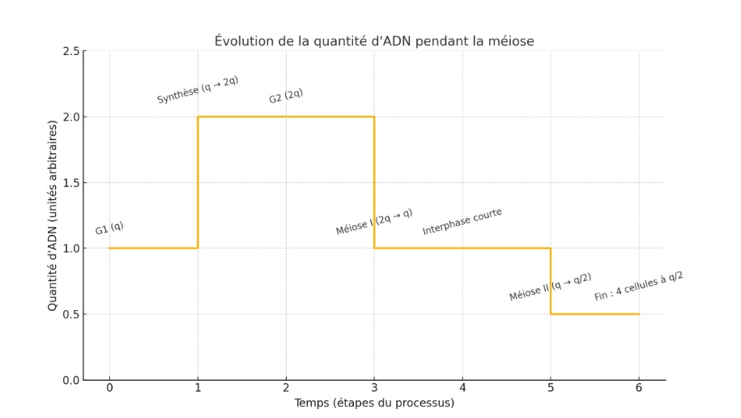
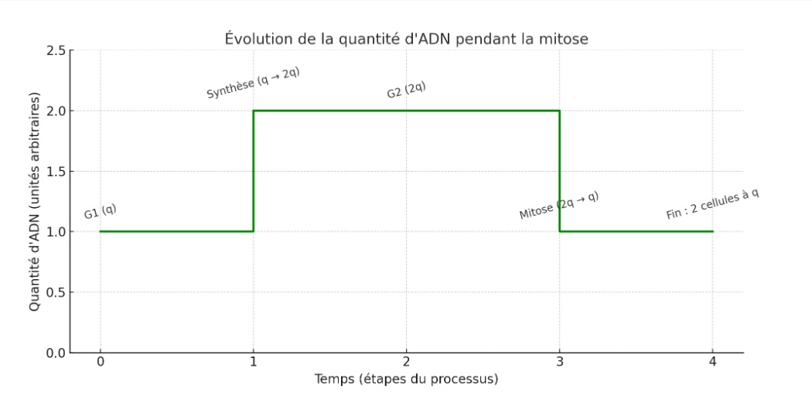

C’est quoi ? La mitose est le processus par lequel nos cellules se copient à l’identique. C’est comme créer un clone parfait.
Pourquoi ? Pour grandir, réparer les blessures ou remplacer les cellules mortes.
Combien de cellules ? Une cellule donne 2 cellules identiques avec 46 chromosomes chacune.
Exemple : La réparation de la peau après une coupure.
C’est quoi ? C’est un processus qui crée les cellules sexuelles (spermatozoïdes et ovules).
Pourquoi ? Pour la reproduction.
Combien de cellules ? Une cellule donne 4 cellules différentes avec 23 chromosomes chacune.
Ce qui est cool : Chaque cellule est unique – c’est pourquoi les enfants ne sont pas identiques à leurs parents.
| Mitose | Méiose | |
|---|---|---|
| Nombre de cellules | 2 cellules identiques | 4 cellules différentes |
| Chromosomes | 46 (même nombre) | 23 (moitié) |
| Utilité | Croissance, réparation | Reproduction |
| Où ? | Partout dans le corps | Testicules / ovaires |
| Produit | Cellules normales | Ovules ou spermatozoïdes |
Question : Un graphe montre une montée de q à 2q, puis redescend à q, et enfin à q/2. S'agit-il de mitose ou méiose ?
Réponse : Il s'agit de la méiose.
Pourquoi ? Deux divisions sont observées. À la fin, chaque cellule fille a q/2 d’ADN (typique des gamètes).
Résultat : 4 cellules filles, toutes différentes, avec 23 chromosomes chacune.
Et voici celle pendant la mitose :
